Both models start from ming024's PyTorch FastSpeech 2. The architecture is unchanged; the changes are in the data pipeline, the text frontends and the inference/plotting code. The two languages share one copy of the modified code (project/FastSpeech2/). Each language folder (English/, Telugu/) has its own config.yaml, plus thin preprocess.py, train.py and inference.py scripts that call that shared code with the language's config. The two models are trained completely separately: they have separate vocabularies, statistics, speaker tables and checkpoints.
| Component | Configuration (identical for both languages) |
|---|---|
| Phoneme embedding + encoder | 4 feed-forward Transformer blocks, hidden 256, 2 attention heads, conv filter 1024, kernel sizes [9, 1], dropout 0.2 |
| Variance adaptor | Duration, pitch and energy predictors (each 2 × Conv1D with filter 256 and kernel 3, then LayerNorm, dropout 0.5, and a linear layer). Length regulator expands phonemes by their durations. Pitch and energy are phoneme-level and z-normalized, quantized into 256 linear bins and embedded. |
| Mel decoder + PostNet | 6 FFT blocks (hidden 256), linear projection to 80 mel bins, 5-layer convolutional PostNet |
| Speaker embedding | Enabled (multi_speaker: True): 115 speaker profiles for English, 2 speakers for Telugu |
| Vocoder | Pretrained HiFi-GAN "universal" generator shipped with ming024 (not fine-tuned) |
| Loss | MAE on the mel output before and after the PostNet; MSE on pitch, energy and log-duration (as in ming024) |
| File | Change | Applies to |
|---|---|---|
| text/telugu.py (new) | Rule-based Telugu grapheme-to-phoneme (G2P) converter. Each consonant letter carries an inherent /a/ unless it is followed by a vowel sign (matra) or a virama (్). Anusvara (ం) takes the place of articulation of the next consonant (ng / ny / nn / n, otherwise m). Visarga becomes h. Gemination comes out naturally as a repeated phone (ట్ట becomes tt tt). Numbers, times (10:45) and ordinals (12వ) are expanded with num2words(lang="te"). The output is a set of 46 phones. | Telugu |
| text/symbols.py | Adds the Telugu phones as @-prefixed symbols next to ARPAbet | Telugu |
| preprocessor/hf_corpus.py, svarah.py, telugu.py (new); prepare_align.py | Loaders that stream the HuggingFace corpora, filter clips by duration, resample them to 22,050 Hz, subsample a fixed number of hours (seed 1234), and write MFA-ready wav/.lab pairs. Svarah has no speaker column, so the speaker ID is a hash of the speaker-metadata tuple, and its audio_filepath column is renamed per item. The Telugu loader balances the two speakers and writes the MFA lexicon using the G2P. | Both |
| preprocessor/preprocessor.py | Train/validation split by audio duration (val_hours: 1.0) instead of a fixed utterance count. Reads MFA 3.x TextGrids, which leave silences unlabeled. Skips utterances with no alignment, where the original code reused stale pitch arrays. Reads text as UTF-8. | Both |
| lang_runner.py (new) | Entry points for every stage. The English frontend runs g2p_en on the whole sentence, which lets its POS tagger choose the noun or verb stress of homographs; ming024 looks up one word at a time. It also expands times, dates and "AM/PM". It writes the audio, the variance-adaptor plots (with predictions de-normalized to Hz and energy units), the loss plots from the TensorBoard logs, and a phoneme and duration log. | Both |
| dataset.py | In-memory sample cache (about 0.5 GB per language). On the training disk each np.load cost about 9 ms, which left the GPU idle. Training went from about 0.8 to about 2.3 steps/s. | Both |
| utils/tools.py | Casts energy to float before logging to TensorBoard, which fixes a dtype crash at validation. | Both |
| audio/stft.py, audio/audio_processing.py, utils/model.py | Compatibility with librosa ≥ 0.10 (keyword-only arguments) and torch ≥ 2.6 (weights_only) | Both |
| config.yaml (per language) | Combines ming024's preprocess, model and train YAML files, and adds the MFA commands (each language with its own temp directory) and the test sentences | Both |
| English: Svarah (ai4bharat/Svarah) | Telugu: IndicTTS (SPRINGLab/IndicTTS_Telugu) | |
|---|---|---|
| Corpus | Indian-accented English with about 117 speakers from many L1 backgrounds. 16 kHz, a single "test" split. | Studio TTS recordings from 2 speakers (one female, one male), 48 kHz |
| Clip filter | 1.5–10 s | 1–11 s (the corpus contains clips up to 152 s; 11 s is about 950 frames, under max_seq_len = 1000) |
| Subsampling | Random utterances (seed 1234) until 6.0 h: 4,308 clips, 115 speaker profiles | Random utterances, capped at 3.5 h per speaker. Only 5.39 h (3,136 clips) passed the duration filter. |
| Resampling | 16 kHz to 22,050 Hz (mel_fmax = 8 kHz, which is Svarah's Nyquist frequency) | 48 kHz to 22,050 Hz |
| Alignment (MFA 3.4.3) | Pretrained english_us_arpa acoustic model and dictionary. 4,283 of 4,308 clips aligned. | No pretrained Telugu model was usable, so mfa train trained one on this corpus with the G2P lexicon and exported the alignments. 3,117 of 3,136 clips aligned. |
| After silence trimming | 5.32 h | 4.43 h |
| Train / val | 3,480 utts / 4.32 h | 790 utts / 1.00 h | 2,443 utts / 3.43 h | 674 utts / 1.00 h |
| Speakers in split | 115 in train; 111 of them also appear in val (utterance-level split) | Train: female 774, male 1,669 utts. Val: 225 / 449. |
No overlap: the split is made per utterance after shuffling, and each clip ID goes to exactly one of train.txt or val.txt (verified: 0 shared IDs, 0 missing feature files). The difference between the hours selected and the hours used comes from trimming leading and trailing silence to the MFA boundaries (ming024's standard behaviour) and from the clips that failed to align. Telugu ended up below the 5 h training target because the corpus has only about 8.7 h in total, and much of it consists of very long clips that the duration filter drops.
80-band log-mel spectrograms (FFT/window 1024, hop 256, so one frame = 11.6 ms) and F0 from pyworld (DIO + StoneMask), linearly interpolated over unvoiced frames. Energy is the L2 norm of each STFT frame. Pitch, energy and duration (from the MFA alignments) are averaged per phoneme, then pitch and energy are z-normalized. Mean F0 is 179 Hz (σ 57) for English and 191 Hz (σ 44) for Telugu.
| Setting | Value (both languages) |
|---|---|
| Optimizer | Adam with β = (0.9, 0.98), ε = 1e-9, gradient clipping at 1.0, batch size 16 (ming024 groups 4 batches per loader fetch) |
| Learning rate | Noam schedule with 4,000 warm-up steps (peak about 9.9e-4), multiplied by 0.3 at steps 25k, 32k and 37k. ming024's 300k/400k/500k steps were scaled down to fit a 40k-step budget. |
| Steps | 40,000 (about 184 epochs for English, 263 for Telugu). Validation every 1k steps; checkpoint every 5k. |
| Hardware / time | One RTX 3050 Laptop GPU (6 GB). English took 5 h 16 min and Telugu 6 h 42 min (Telugu clips are longer, and the GPU was thermally limited at about 86 °C). |
| Checkpoint used for results | English: 40k. Telugu: 25k. Both were chosen by listening to 10k, 25k and 40k (all three are in Results/<Lang>/checkpoint_comparison/). |
| Inference speaker | English: MNepali_d270fa (the speaker profile with the most training utterances). Telugu: female. |
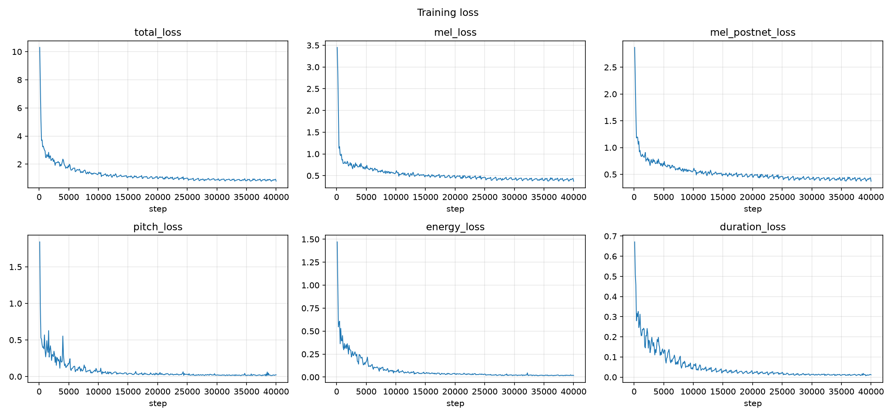
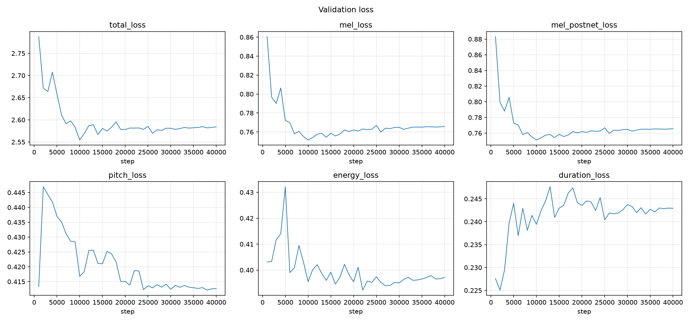
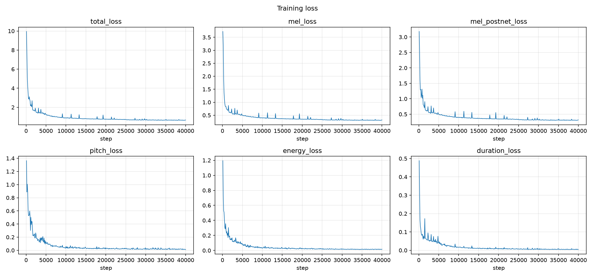
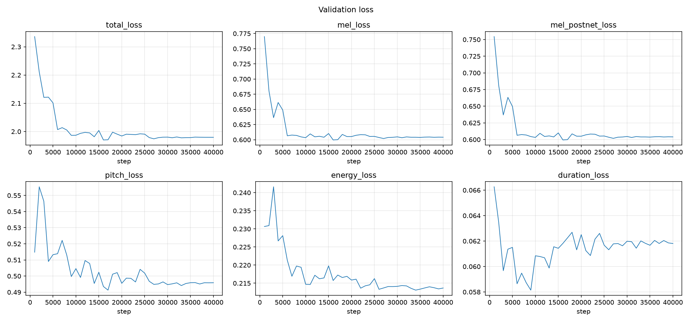
| Step | English total (mel) | Telugu total (mel) | ||||
|---|---|---|---|---|---|---|
| train | val | val pitch / energy / dur | train | val | val pitch / energy / dur | |
| 1k | – | 2.79 (0.86) | 0.41 / 0.40 / 0.23 | – | 2.34 (0.77) | 0.51 / 0.23 / 0.066 |
| 10k | 1.34 (0.58) | 2.55 (0.75) | 0.42 / 0.40 / 0.24 | 0.89 (0.39) | 1.99 (0.60) | 0.50 / 0.21 / 0.061 |
| 25k | 1.01 (0.46) | 2.59 (0.77) | 0.41 / 0.40 / 0.24 | 0.72 (0.34) | 1.99 (0.61) | 0.50 / 0.22 / 0.062 |
| 40k | 0.79 (0.37) | 2.58 (0.77) | 0.41 / 0.40 / 0.24 | 0.67 (0.32) | 1.98 (0.60) | 0.50 / 0.21 / 0.062 |
Convergence. Training loss falls steadily for both models, with visible drops at the learning-rate anneals (25k, 32k, 37k). Validation loss falls quickly during warm-up and reaches its minimum around 8–10k steps for both languages, then stays flat. There is no divergence or NaN, and the only instability is the noisy first 5k steps of warm-up. The English validation pitch and energy losses spike at 2k–5k, as the predictors move past the trivial mean prediction.
Overfitting. Training loss keeps falling (English 1.34 to 0.79, Telugu 0.89 to 0.67) while validation loss stays flat. English mel validation loss rises slightly after 10k (0.751 to 0.766), and its duration validation loss rises slightly from 2k. This is mild overfitting, which is expected with only 3.4–4.3 h of data. The largest train/val gaps are pitch and energy (training pitch loss about 0.02 vs validation about 0.4–0.5): the predictors memorize the training prosody but generalize only to the average contour. Early stopping at about 10k would have given the same validation loss in a quarter of the time. In listening tests, however, the later checkpoints sounded cleaner (English 40k, Telugu 25k were preferred), which matches the well-known observation that mel L1 is only weakly correlated with perceived quality.
English vs Telugu. Telugu reaches clearly lower losses (validation mel 0.60 vs 0.77, duration 0.06 vs 0.24, energy 0.21 vs 0.40). Telugu is two speakers reading a script in a studio. English is 115 speakers with different L1 accents, recording conditions and speaking rates, so it has much more variance that the model cannot explain from text alone. Telugu pitch loss is higher (0.50 vs 0.41) because it mixes a female and a male voice with very different F0 ranges.
Audio is in Results/<Lang>/test_generated_audios/. The exact input, the normalized text, the phoneme sequence and the predicted durations for every sentence are in test_sentences_phonemes.txt. All sentence texts were passed to the model exactly as given, including the "rhyth m" split in E3 and the "అడ విలో" split in T3.
| ID | Frontend output / pronunciation | Observations |
|---|---|---|
| E1 (5.50 s) | "antidisestablishmentarianism" becomes AE2 N T AY0 D IH0 S AH0 S T AE2 B L IH0 SH M AH0 N T EH1 R IY0 AH0 N IH0 Z AH0 M (dictionary pronunciation, 28 phones) | The 28-phone word is synthesized without skipping or repeating phones, because the duration-based length regulator cannot "lose attention" the way Tacotron-style models can. Durations stay at about 3–6 frames per phone, so the long word is read at the same rate as the rest of the sentence with no extra effort on it. The final Z is lengthened (17 frames). |
| E2a / E2b | "conduct": E2a gives K AA1 N D AH0 K T (noun, stress on the first syllable); E2b gives K AA0 N D AH1 K T (verb, stress on the second syllable) | The homograph is resolved correctly in the input, because g2p_en tags "conduct" as a noun after "orchestra's" and as a verb after "will". The acoustic realization of the difference is weak, though. In E2a the stressed AA1 is short (4 frames) and its F0 (145 Hz) is below the preceding K (170 Hz). In E2b the stressed AH1 is also 4 frames and about 120 Hz. The model learned little lexical-stress prominence from Svarah's largely syllable-timed Indian English, so the two "conduct"s sound more alike than they would in native English. |
| E3 (2.97 s) | "rhyth m" becomes R AY1 DH + EH1 M | Failure case. "rhyth" is out of vocabulary, so g2p_en's neural predictor guesses R AY1 DH ("rythe"). The isolated "m" is read as the letter name "em". The intended word (/rɪðəm/) is not produced. The model also stretches this unfamiliar region (AY1 18 frames, DH 12 frames), which is about 3× the sentence average. Better text normalization (rejoining a split token when the joined form is a dictionary word) would fix it. |
| E4 (6.32 s) | Normalized to "...at ten forty five ay em on twelfth November twenty twenty six, so andaroo..."; "andaroo" becomes AE0 N D AA1 R OW0 | The time, the "AM" abbreviation and the date are expanded correctly into spoken words. Without this step ming024 would have dropped the digits. The comma becomes a pause token (sp, 35 frames = 0.41 s), which gives a natural phrase break. "andaroo" (Telugu for "everyone") is code-mixed. It gets an anglicized guess with stress on the second syllable, and the expected Telugu /ʌndʌruː/ with a long final vowel is only approximated. |
| ID | Frontend output / pronunciation | Observations |
|---|---|---|
| T1 (5.29 s) | న్యూరోఫార్మకోలాజికల్ becomes n y uu r oo ph aa r m a k oo l aa j i k a l | The English loanword written in Telugu script is converted letter by letter, which is correct for this script: the conjunct న్యూ becomes n y uu, and the final ల్ (with virama) has no inherent vowel. Durations are even (4–12 frames), and the long vowels uu/oo/aa get 10–12 frames against 4–7 for short ones. ఫ is rendered as aspirated ph rather than English /f/, which matches common Telugu pronunciation. |
| T2a / T2b | పట్టు becomes p a tt tt u in both | పట్టు ("grip" in T2a, "silk" in T2b) is a homograph with the same pronunciation, so identical phonemes are correct. The geminate is two tt tokens with a combined closure of 11–12 frames, against 5 frames for a single retroflex (the dd of తాడు). Gemination is clearly realized. The word gets the same durations in both sentences (p a tt tt u = 7 5 7 4 5 and 9 4 8 4 5). Any difference in meaning would only come from sentence-level prosody, which the model does not model. |
| T3 (2.30 s) | అడ విలో becomes a dd a + v i l oo; నిశ్శబ్దంగా becomes n i sh sh a b d a ng g aa | Unlike E3, the split here is harmless: the Telugu frontend inserts no boundary between words, so the phone string is identical to the correctly written అడవిలో and the word is read as one unit. The geminate శ్శ gives 17 frames of frication, and the anusvara before గ correctly becomes velar ng. |
| T4 (8.95 s) | Normalized: రెండు వేల ఇరవై ఆరు నవంబర్ పన్నెండవ తేదీ ఉదయం పది నలభై అయిదు గంటలకు ... | The year, the ordinal 12వ (which becomes పన్నెండవ, merging the number's final ు with the suffix) and the time 10:45 are all expanded into spoken Telugu. num2words' literary form వేయిల is replaced by the spoken form వేల. The comma gives a 44-frame (0.51 s) pause. This is the longest sentence (122 phones), and there is no rate drift across it. |
Overall quality. Both models produce intelligible speech, and every test sentence was synthesized without skipped or repeated words. The main quality limits come from the vocoder and the data, not from the acoustic model. The universal HiFi-GAN was not fine-tuned on either corpus, so it adds slight buzz on some voiced segments. English is band-limited to 8 kHz because Svarah is 16 kHz audio, and its prosody is flatter, averaged over 115 accents. Telugu, trained on clean studio data from one speaker per gender, sounds more consistent.
For every test sentence there are three bar charts (variance_adaptor_plots/{duration,pitch,energy}/): predicted duration in mel frames, F0 in Hz and energy, one bar per phoneme. Pitch and energy are phoneme-level predictions de-normalized with the training statistics. Because F0 is interpolated over unvoiced frames during preprocessing, voiceless consonants still get an F0 value close to that of their neighbours.
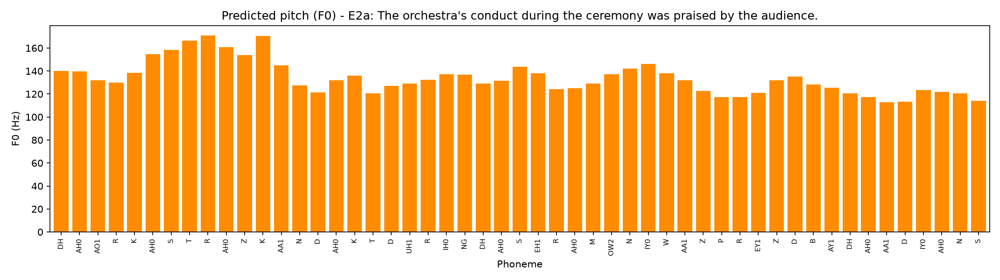
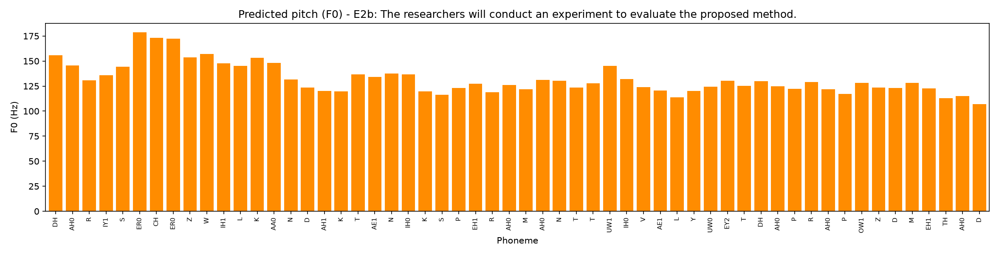
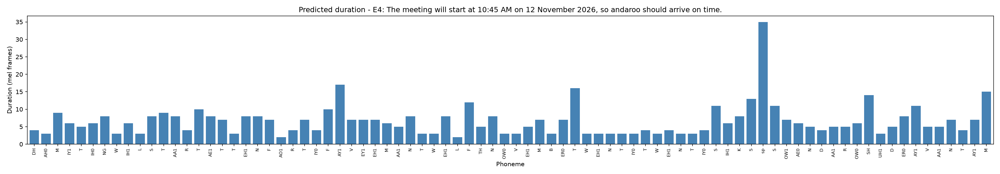
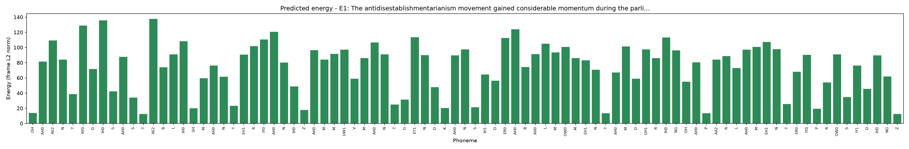
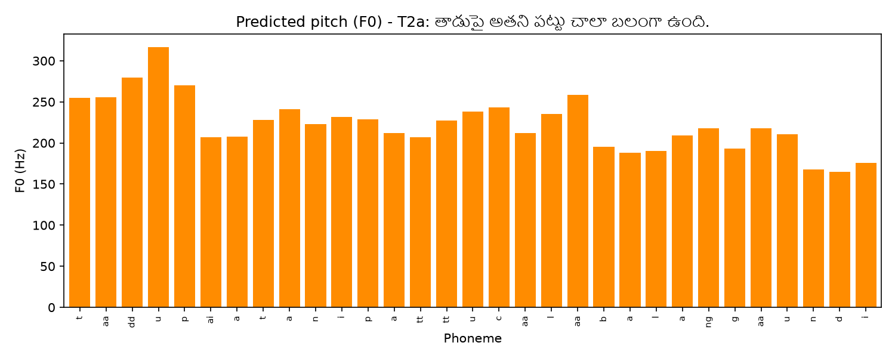
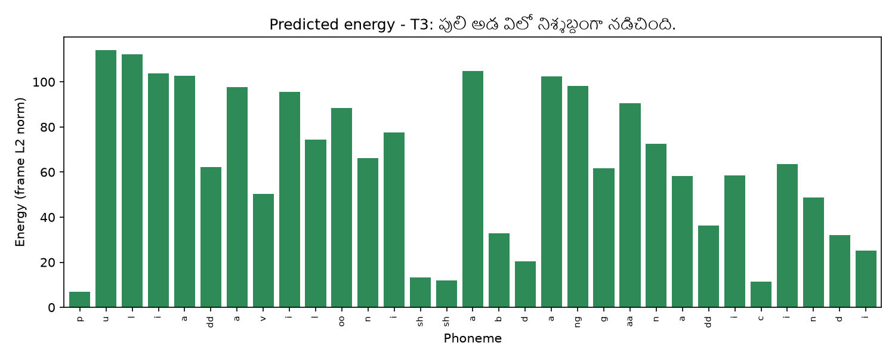
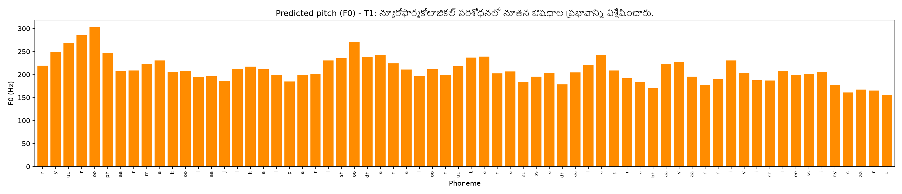
| ID | Duration | Pitch (F0) | Energy |
|---|---|---|---|
| E1 | Even, 3–6 frames per phone across the long word. Lengthened final Z (17). | Starts at about 140–170 Hz and falls gradually. There are small local peaks on primary-stressed vowels (EH1, IY1), but no pitch prominence specific to the long word. | Clear vowel/consonant alternation (vowels 90–137, voiceless consonants 12–40) |
| E2a | Phrase-final S of "audience" is 18 frames. The stressed AA1 of "conduct" is short (4). | Peak about 170 Hz in "orchestra's"/"conduct" (on the consonants K and T), then declination to 113 Hz. This is a declarative contour. | Highest on AO1, AA1 and EY1. Final S is low. |
| E2b | CH in "researchers" is long (12), and K in "conduct" is 14 frames (strong closure before T). | Starts higher (178 Hz on "researchers"), with no peak on the stressed AH1 (about 120 Hz). Ends at 107 Hz. | Similar pattern. The stress difference between E2a and E2b is not visible in energy either. |
| E3 | Anomalous lengthening of the mis-guessed "rhyth" (AY1 18, DH 12). Final IY0 is 24 frames. | Fairly flat at 110–150 Hz, with small peaks on EH1 M ("em") and EY1 ("changed"). | Normal alternation. The spurious "em" gets full vowel energy, so it is clearly audible as an extra syllable. |
| E4 | A 35-frame sp at the comma. Lengthened AY1 ("five", 17) and final M (15). Number words at about 3 frames per phone are spoken quickly. | A declination reset after the pause: the second clause starts higher again, which is typical of a two-phrase sentence. | Drops to the minimum on sp. |
| T1 | Long vowels (uu, oo, aa) are 10–12 frames against 4–7 for short ones, so phonemic vowel length is learned. Final u is 12. | A rise at the start of each word, then overall declination (303 to 156 Hz). This fits Telugu's initial-syllable prominence. | Vowels are high, with dips on the aspirates and fricatives (ph, sh, ss). |
| T2a | The long aa of తాడు is 15 frames against 5 for short vowels. The geminate tt tt totals 11. | Peaks at 317 Hz on తాడు, then declines to about 165 Hz. బలంగా gets a small rise. | Low on the stops (t, p, tt, c, b), high on aa/ai. |
| T2b | Word-initial ఆ (aa) is 13 frames, geminate tt tt is 12, and final i is 15 (phrase-final lengthening). | A contour similar to T2a: the sentence starts high and declines. పట్టు gets the same local contour as in T2a. | Similar to T2a. |
| T3 | The geminate sh sh is 17 frames in total, final i 15, and short vowels 4–6. | Declination with a small rise on నిశ్శబ్దంగా. The space inside అడ విలో produces no pitch reset. | Very low on p, sh sh and c (7–13), and vowels about 100. A textbook pattern. |
| T4 | Initial ii is 16 frames, the pause at the comma is 44 frames, and the rate is constant across the 122 phones. | Repeated mild rises at word onsets and a declination reset after the comma (rising to about 265 Hz on సమయానికి). | Drops sharply at sp and stays steady elsewhere. |
Common patterns. (1) Duration: phrase-final lengthening and lengthening at pauses appear in both languages. Telugu duration additionally encodes phonemic vowel length and gemination, which is the reason for its very low duration loss: Telugu timing is predictable from the script. (2) Pitch: both models produce declarative declination, with a reset after a comma pause. English shows almost no lexical-stress pitch accent. Telugu shows word-initial rises. Absolute F0 follows the selected speaker (English male about 110–170 Hz, Telugu female about 150–320 Hz). (3) Energy: in both languages it follows sonority (vowels > nasals and liquids > voiced stops > voiceless obstruents), so energy is largely predictable from phone identity.
| Aspect | English (Svarah) | Telugu (IndicTTS) |
|---|---|---|
| Data | 4.32 h, 115 accented speakers with mixed recording quality, 16 kHz source | 3.43 h (below the 5 h target, because the corpus is small after filtering), 2 studio speakers, 48 kHz source |
| Frontend | Mature: CMUdict plus a neural OOV predictor and POS-aware homograph handling. It fails on split or garbled tokens (E3) and on code-mixed words (E4 "andaroo"). | Rule-based G2P. It is accurate because the script is phonemic, but it has no schwa or vowel reduction, no stress, and no handling of English words in Latin script. |
| Validation loss | 2.58 (mel 0.77) | 1.98 (mel 0.60) |
| Prosody | Flat, averaged over many accents. Weak lexical stress. | Clear vowel-length and gemination contrasts. Natural declination. |
Failures observed on the test sentences.
Possible improvements.
Software. Python 3.11.9, torch 2.5.1+cu121, torchaudio 2.5.1, librosa 0.11.0, numpy 2.4.6, scipy 1.17.1, pyworld 0.3.5, tgt 1.5, g2p-en 2.1.0, num2words 0.5.14, datasets 5.1.0, matplotlib 3.11.2, tensorboard 2.21.0. Montreal Forced Aligner 3.4.3 runs in a separate conda environment named mfa. The full list is in requirements.txt. Hardware: an RTX 3050 Laptop GPU (6 GB) on Windows 11.
Configuration files. English/config.yaml and Telugu/config.yaml contain the preprocessing, model and training settings, the MFA commands and the test sentences. All random selection uses seed 1234.
# setup python -m venv .venv && .venv\Scripts\activate pip install torch torchaudio --index-url https://download.pytorch.org/whl/cu121 pip install -r requirements.txt conda create -n mfa -c conda-forge montreal-forced-aligner # aligner hf auth login # Svarah is gated: accept its terms first # unzip FastSpeech2/hifigan/generator_universal.pth.tar.zip in place # per language (identical commands for Telugu/) python English/preprocess.py # prepare -> MFA align -> features (or --stage prepare|align|features) python English/train.py # 40k steps; resume with --restore_step N tensorboard --logdir English/logs # live loss curves and validation audio python English/inference.py --restore_step 40000 # Telugu: --restore_step 25000
inference.py writes the test audio, the variance-adaptor plots, the loss plots and test_sentences_phonemes.txt to Results/<Lang>/. A different speaker can be chosen with --speaker <name>, using any name from speakers.json.